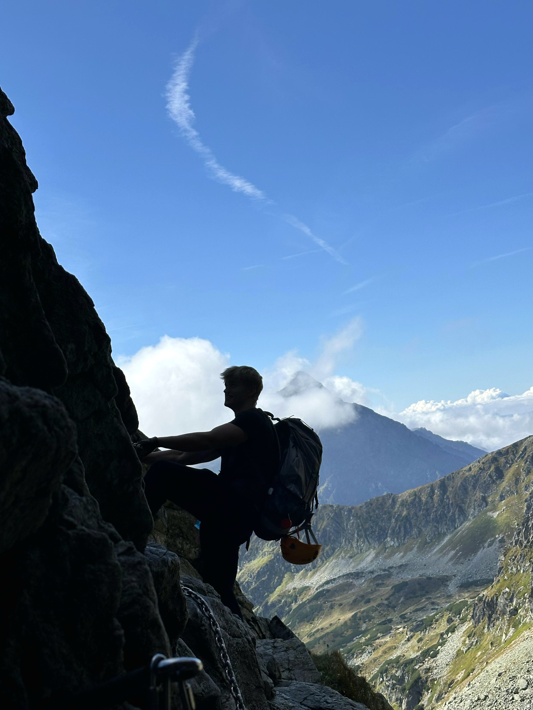
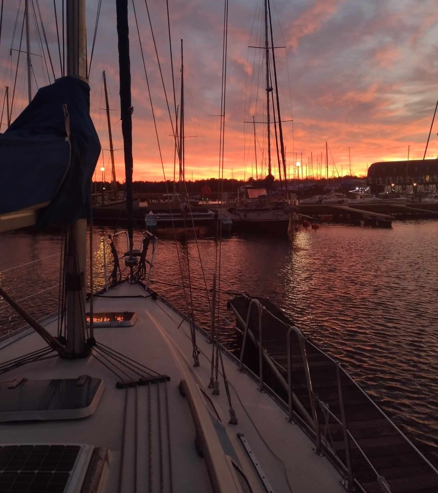
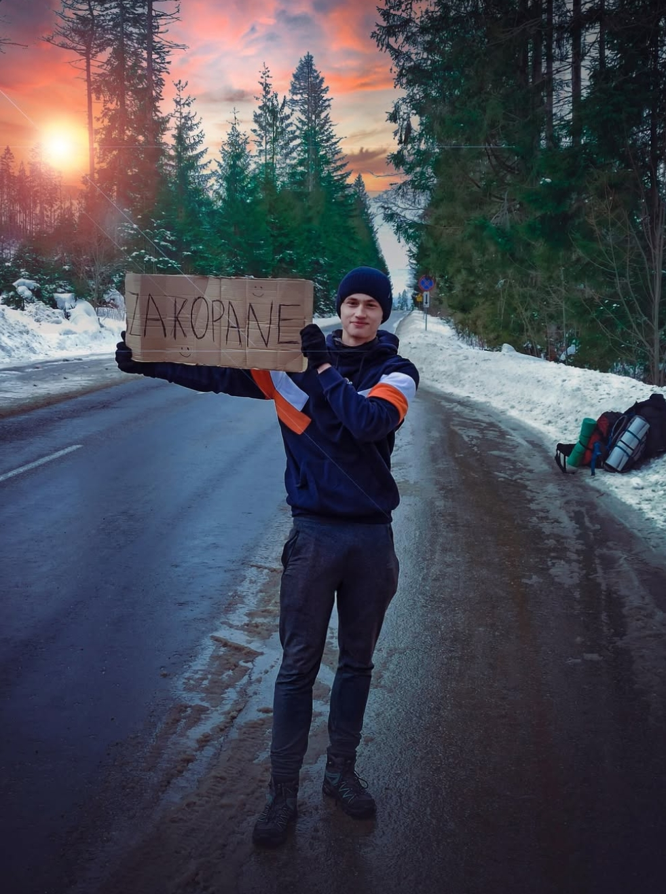
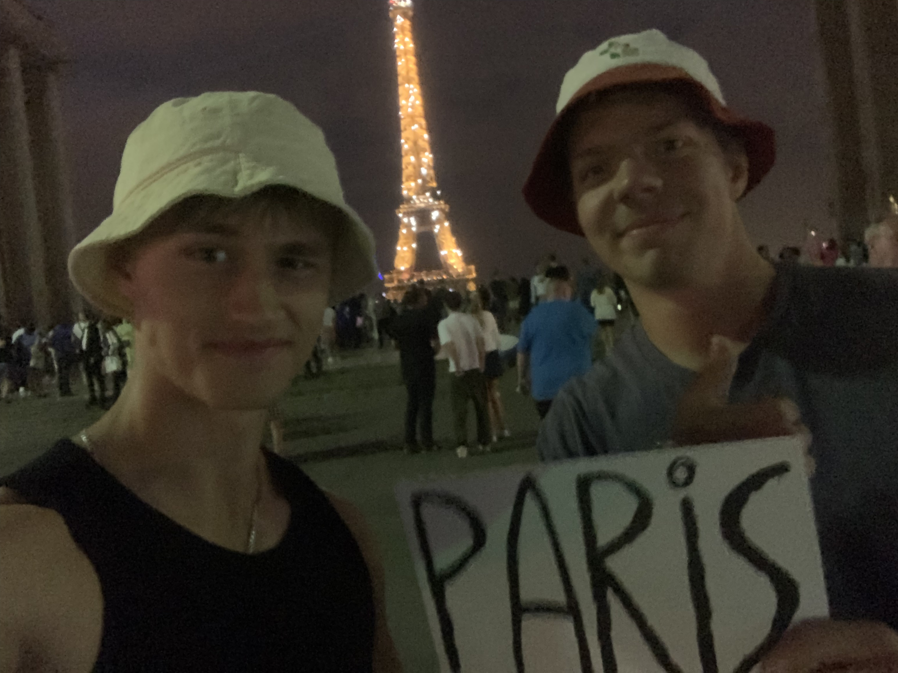

Najlepiej czuje sie, kiedy cos sie dzieje.
Poza praca raczej nie siedze w miejscu, lubie ruch, podroze i rozne doswiadczenia, szczegolnie takie, gdzie nie ma planu i trzeba dzialac. Wychowalem sie w duzej rodzinie, mam czworke rodzenstwa, wiec od zawsze bylo raczej dynamicznie i trzeba bylo ogarniac na biezaco.


Plywam na jachtach
Bylem na Baltyku i Morzu Srodziemnym, mam kurs SRC i koncze patent na plywanie po morzu. To jedna z tych rzeczy, gdzie naprawde czujesz odpowiedzialnosc i uczysz sie podejmowac decyzje w praktyce.
Uwielbiam gory
Szczegolnie Tatry, ale lubie tez wyjazdy dalej. Bylem w Maroku i wszedlem na najwyzszy szczyt Afryki Polnocnej, ponad 4000 m. Lubie takie wyjazdy, gdzie cos sie dzieje, a nie tylko ladne widoki.
Podroze autostopem
Przejechalem dziesiatki tysiecy kilometrow. Spalem u losowo poznanych ludzi, w namiotach, w hamaku, na dziko na pustyni w Jordanii i nawet w centrum Paryza. Z czesci wyjazdow nagralem vlogi. To byly doswiadczenia, ktore naprawde ucza radzenia sobie w kazdej sytuacji.


Sportowa dyscyplina
Ruch byl ze mna od zawsze
Sport zawsze byl duza czescia mojego zycia. Trenowalem tenis, waterpolo, skoki do wody, pilke, jujitsu, kickboxing i trojboj. Dzis bardziej dla siebie, ale dalej lubie sie ruszac, szczegolnie siatkowka, squash i badminton.
Motoryzacja
Interesuje mnie motoryzacja, lubie auta i silniki. Zlozylem sam minicrossa, czasem cos naprawiam, jak ogarne temat. Bardziej zajawka niz teoria.
Szachy
Kiedys gralem w szachy bardziej na serio i bralem udzial w konkursach, dzis gram raczej dla przyjemnosci. Dalej lubie to za myslenie do przodu i spokojna rywalizacje.
Historia
Interesuje mnie historia, glownie XIX i XX wiek. Lubie patrzec, jak decyzje ludzi wplywaly na to, jak wygladal swiat pozniej.